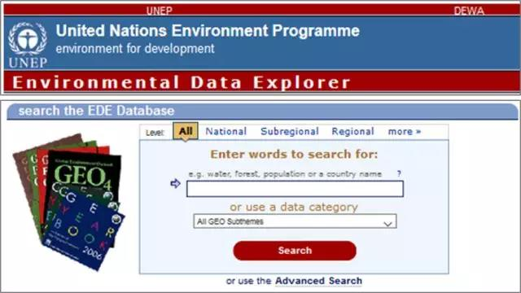
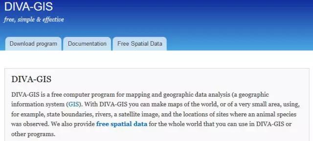
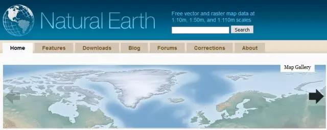

Remote Sensing
您现在的位置是：网站首页>>【资料下载】【资料下载】常用的开放空间数据下载网站推荐
常用的开放空间数据下载网站推荐
发布时间：2018-07-01 09:12:42来源：数字地形周刊点击：3016
| 名称 | 图 | 下载地址 | 数据介绍 |
|---|---|---|---|
| Open Topography |  |
http://www.opentopography.org | Open Topography是一个提供高空间分辨率的地形数据和操作工具的门户网站。通过Open Topography，用户可以下载LiDAR数据（主要包括：美国、加拿大、澳大利亚、巴西、海地、墨西哥和波多黎各）。这些数据可以用于学习和研究 |
| Environmental Data Explorer |  | http://geodata.grid.unep.ch | Environmental Data Explorer是联合国环境规划署（UNEP）及其合作伙伴在全球环境展望(GEO)报告和其他综合环境评估报告中所使用的数据集，是比较权威的全球性环境类数据源。在线数据库提供数百种统计或空间数据集,主要数据类型包括如水、人口、森林、排放、气候、灾害、健康和GDP等环境相关数据。可以即时显示为地图、图表、数据表或下载不同格式的数据。只需要在搜索框中输入关键词就可以查看并下载。 |
| DIVA-GIS |  | http://www.diva-gis.org/Data | DIVA-GIS本身是一个用于制图和空间分析的计算机软件。但其网站也提供可下载使用的政边界数据。另外，可下载的数据还包括道路、铁路、高程、土地覆盖及人口密度等。可以按照国家下载，也可以批量下载全球范围内的各类数据。可下载的数据格式包括shapfile、geodatabase等多种形式。 |
| Natural Earth |  | http://www.naturalearthdata.com | Natural Earth提供多不同尺度下全球范围内的矢量和栅格数据。其矢量数据提供SHP或SQLLite格式。下载后可以直接在ArcGIS或QGIS中使用。比例尺分为大比例尺、中比例尺和小比例尺三种尺度。数据主题包括cultural、physical和raster三大类。 |
| NASA Earth Observations |  |
https://neo.sci.gsfc.nasa.gov | NASA Earth Observations提供全球范围内不同主题的遥感监测数据，主要包括大气、能源、土地、生活、海洋五大主题的专题影像数据。通过NEO可以查看地球气候和环境状况的每日快照。 |